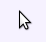
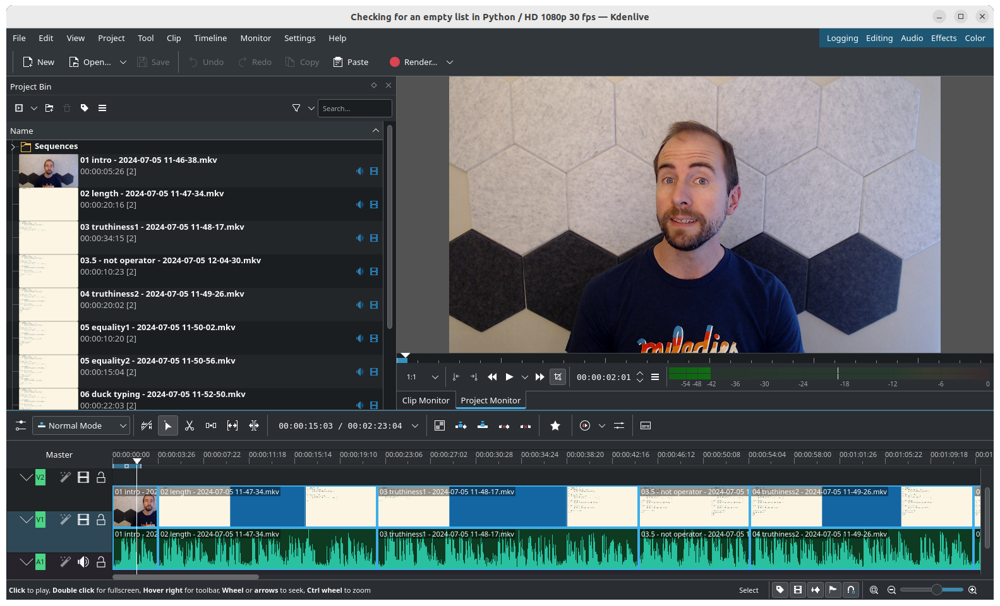
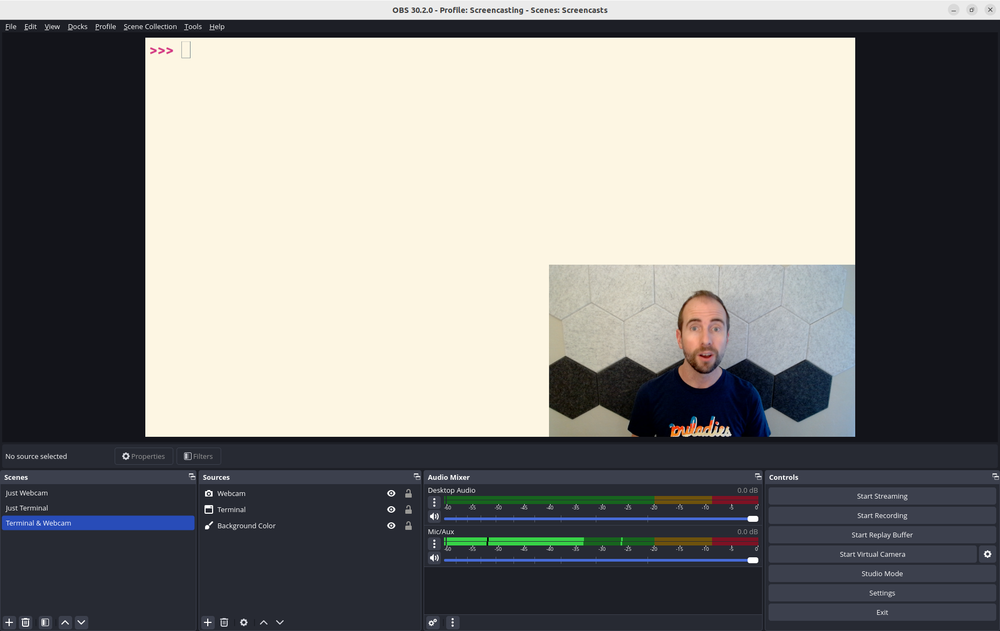
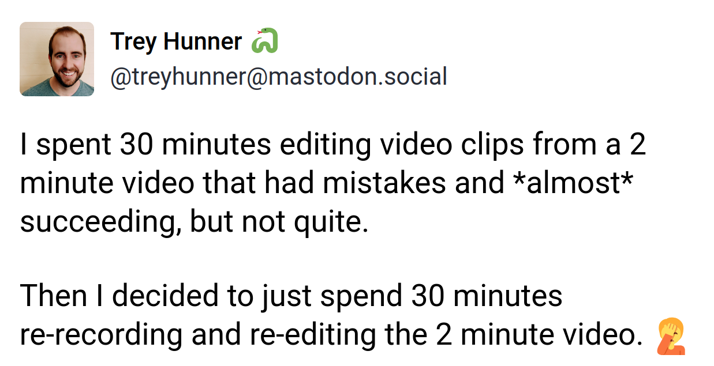
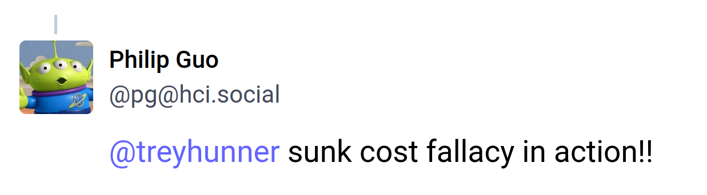
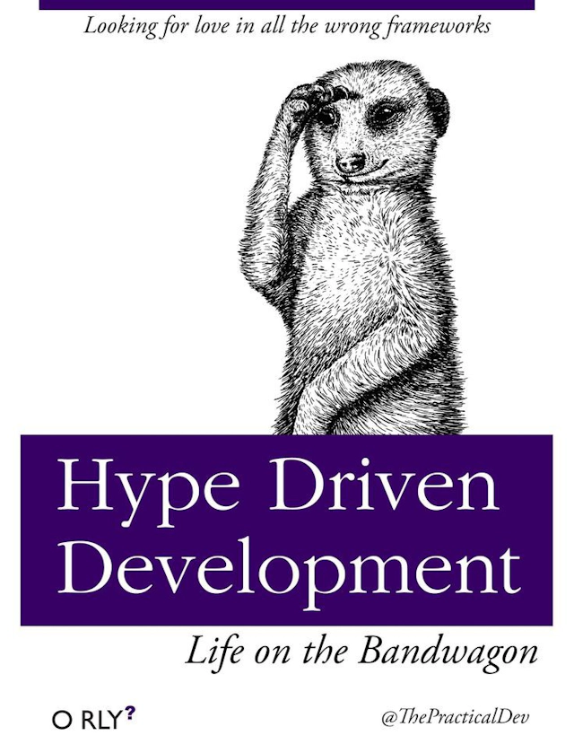
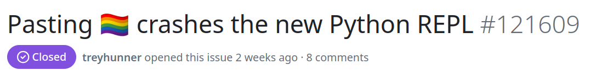
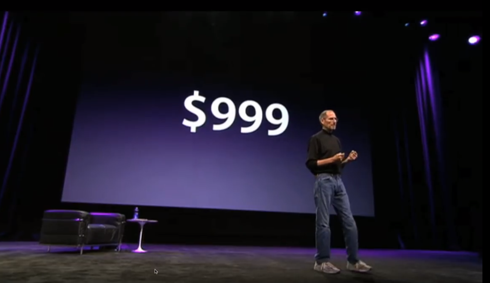
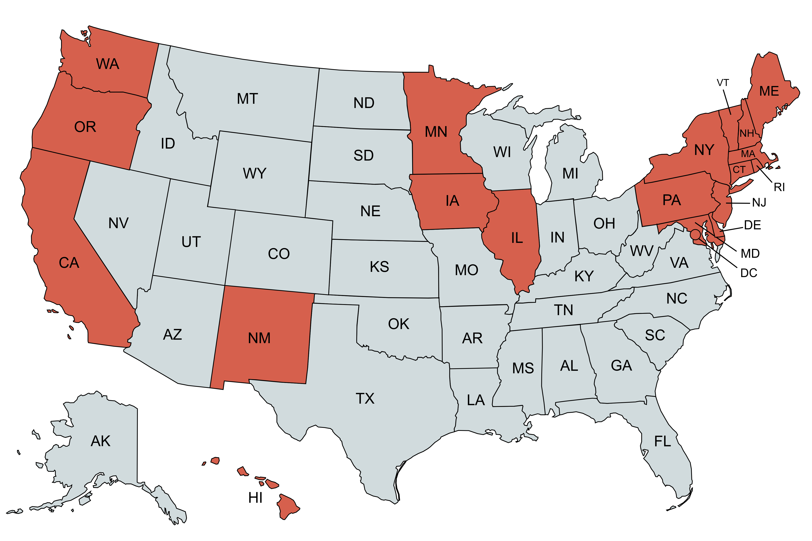
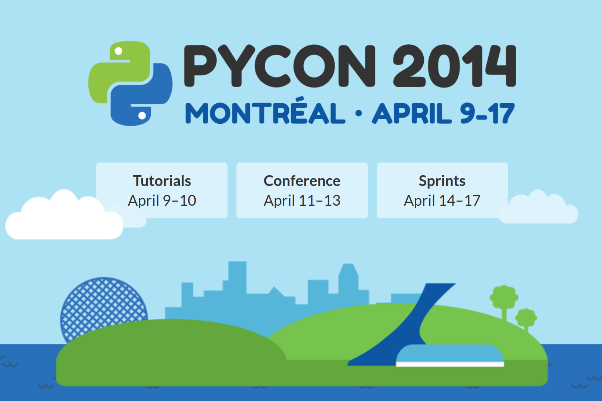

Metacognition
Thinking About Thinking
- I'd like to **(CLICK)** *think* **about our thinking**
- Which you could think of as *metacognition* **(CLICK)**
- That's not *quite* what metacognition means to academics
- But I'm **not an academic**, so I will happily misuse this word
- When it comes to thinking about thinking...
Metacognition
I am a learner , a dabbler , and a hobbyist
Python teacher and PSF CoC WG alumnus
Thinking about
teaching ,
learning ,language ,
intent ,
and perspectives
- I am...
- **(CLICK)** a learner
- **(CLICK)** a dabbler
- **(CLICK)** and a hobbyist
- I listen to a *lot* of audiobooks and a lot of podcasts that are in someway related to thinking about thinking
- But this isn't *just* a hobby for me
- **(CLICK)** I teach Python and I helped form **(CLICK)** the Python Software Foundation's Code of Conduct work group...
- learning about learning **(CLICK)** helps me teach better
- and in the Code of Conduct work group I also spent time reflecting on...
- **(CLICK)** language, **(CLICK)** people's intentions, **(CLICK)** how our behavior is perceived
Cognitive Biases
Mental Models
Making Progress
- This talk has 3 parts...
- First, we'll acknowledge our own **(CLICK)** biases
- Then, we'll appreciating that our brain is **(CLICK)** constantly making *models* of the world
- And then we'll consider **(CLICK)** the gradual nature of progress
- ...
>>> import this
The Zen of Python, by Tim Peters
Beautiful is better than ugly.
Explicit is better than implicit.
Simple is better than complex.
Complex is better than complicated.
Flat is better than nested.
Sparse is better than dense.
Readability counts.
Special cases aren't special enough to break the rules.
Although practicality beats purity.
Errors should never pass silently.
Unless explicitly silenced.
In the face of ambiguity, refuse the temptation to guess.
There should be one-- and preferably only one --obvious way to do it.
Although that way may not be obvious at first unless you're Dutch.
Now is better than never.
Although never is often better than *right* now.
If the implementation is hard to explain, it's a bad idea.
If the implementation is easy to explain, it may be a good idea.
Namespaces are one honking great idea -- let's do more of those!
- If you type `import this` **(CLICK)** in a Python prompt...
- You'll see **(CLICK)** a poem printed out
- This poem is called the Zen of Python
- I often tell my students that **(CLICK)** each line in this poem *may be in opposition* to at least **(CLICK)** *one* other line
- Which means this poem can be used for **starting** arguments, but not for **ending** them
- Like the Zen of Python...
Start
Answers Questions
- I'm hoping to **(CLICK)** *start* a conversation... *not* to conclude one
- I don't have many solutions for you **(CLICK)**, but I do have **(CLICK)** a lot of questions
Patterns are great
Shortcuts are great
Heuristics are great
- Our brains **(CLICK)** love **patterns**
- Patterns help our brains **(CLICK)** take **shortcuts**
- Our brains are pretty adept at taking *reasonable* shortcuts **(CLICK)** *most* of the time
- But all shortcuts are prone to **systematic errors**


- A few weeks ago, I recorded a bunch of **short video clips** and then I realized that I had accidentally recorded **(CLICK)** my **mouse cursor**, which I didn't want to be included in those clips
- I had spent about 30 minutes recording these clips
- I then spent about 30 minutes trying to **(CLICK)** edit my mouse cursor *out* of these clips
- Unsurprisingly, I **did not** succeed
- I am *not* an experienced video editor and it definitely takes me **more than 30 minutes** to edit a mouse cursor out of **half a dozen** video clips
- So I then **gave up on editing** and...

- And I **re-recorded** every video clip that had a mouse cursor **(CLICK)**... which took me **less than 30 minutes**
- Why did I spend the time to try editing those original video clips?
- ...
- I posted about this situation on Mastodon...
“I've come this far. I can't give up now.”
Sunk Cost Bias


- and a **cognitive science professor** pointed out **(CLICK)** that I was experiencing the sunk cost bias
- Which I'd sum up **(CLICK)** with the phrase "I've come this far, so I can't give up now"
- The sunk cost bias is just **one type** of ...
Cognitive Biases
Amos Tversky & Daniel Kahneman
- ...Cognitive bias
- The phrase "cognitive bias" was invented by two psychologists in 1972: **(CLICK)** Amos Tversky and Daniel Kahneman
- Cognitive biases are **shortcuts** that our brain takes which *occasionally* cause us to **make errors in judgement**
Thinking Fast and Slow
By Daniel Kahneman
System 1 (Fast Thinking)
System 2 (Slow Thinking)
- In the book **(CLICK)** Thinking Fast and Slow, Daniel Kahneman talks about **(CLICK)** System 1 and **(CLICK)** System 2, which...
- You can think of "fast thinking" **(CLICK)** and "slow thinking" **(CLICK)**
- Fast thinking involves fast and **nearly effortless** mental work
- Slow thinking involves **slow and deliberate** mental work
- It might seem like slow thinking is better...
- ... but slow thinking requires *more energy* and *more time*
- Fast thinking *is* **absolutely necessary**, but it's also **the cause** of many our cognitive biases
Sunk Cost Bias
“I've come this far. I can't give up now.”
- The sunk cost bias is just one of *many* biases
- Some others include...
Bandwagon Effect
bandwagon.js

- The Bandwagon Effect
- Which is the also the name of a front-end web framework **(CLICK)** that was released just last week
- I heard it's really great. **(CLICK)**
- I think *tomorrow* might be a good day to rewrite your entire code base to use it.
- There's also...
Confirmation Bias
Validating your current assumptions
- Confirmation bias
- Which involves seeking out information that **confirms** your **existing assumptions or beliefs**
- This happens when we try to **validate** our assumptions instead of trying to **invalidate** them
- Which is *related* to a common problem with *testing your code*...
February 29, 1968
✅
🧪
😞
- Years ago, I made an application that had **(CLICK)** great code coverage and we'd thoroughly tested the application **(CLICK)**
- Then our first user **tried to sign up** and it broke **(CLICK)**
- Our first user had apparently born on **(CLICK)** February 29th.
- And our age validation logic **had a bug** which resulted in **an exception** for **February 29th birthdays**
- We had confirmed that *our* birthdates worked, but we hadn't thought of all the edge cases
- You know might have helped?
Quality Assurance
👩
👩🎤

- **Quality assurance**... good QA engineer knows how to break applications
- They try **interesting birthdates**, enter **odd email** addresses, and they paste emoji characters **(CLICK)**, but not just *any* emoji... they paste emoji glyphs **(CLICK)** that include **zero-width joiners**... which often break code.
- In fact, Python 3.13 *just recently* **(CLICK)** had a bug that was related to zero-width joiners.
- Questioning your own assumptions is difficulty
- The next time you could **use some help** working around **your own confirmation bias**...
- Talk to a friend **(CLICK)**
- Or walk through your code with a rubber duck **(CLICK)**
- Or ask a chat bot **what assumptions** you might be making **(CLICK)**
- To overcome our natural confirmation bias, we need to **question** our beliefs **instead of** trying to **confirm** them
Anchoring Bias

- An anchoring bias occurs when our brain **inadvertently anchors** our thinking on a specific piece of information, which can *sometimes* **cloud our judgement**
- For example, when Steve Jobs, announced the price of the iPad, **(CLICK)** he displayed $999 on the screen for many seconds before eventually announcing that the price of an iPad would be $499 **(CLICK)**
- That made iPads *immediately* seem inexpensive
- The anchoring bias doesn't just apply to prices...
Anchoring Bias
“Can you get this done in 13 weeks?”
“Yes. This should take about 8 weeks.”
“I expect this to take 1 week. What do you think?”
“No way. More like 4 weeks.”
- Imagine your manager asks you how long a new project will take
- They say: **(CLICK)** can you get this done in **13 weeks**?
- And you say: **(CLICK)** sure we can get it done in **8 weeks**.
- What if instead, they had said: **(CLICK)** can you do this in **a week**?
- You're likely to say something like: **absolutely not**.
- **(CLICK)** This will take **4 weeks**.
- Overcoming the anchoring bias takes a lot of *very slow* and **very deliberate** thinking
Status Quo Bias
Default State
- Our brains tend to prefer **the way things are**, especially when a situation is **complex** or outcomes are **uncertain**
- The "way things are" is the default **(CLICK)** and defaults are **easy**
- This is called the **status quo bias**
- But our brains don't *always* prefer the status quo...
- We *also* have a tendency for *action*
Action Bias
- So our brains are also susceptible to an action bias
- ...especially in **high-pressure situations**
- *Action* is **not always better than inaction**
- There's a **principle** related to this bias, about...
Chesterton's Fence
- ...Fences.
- Let's say you **acquire some land** and on that land you **find a fence**
- You don't like the fence
- It's not a pretty fence and it has a **strange location**
- And you don't know **what purpose** this fence could possibly serve
- Should you **tear down this fence**?
- **(CLICK)** Chesterton's Fence is the idea that you shouldn't take down a fence unless you **try to understand the reason** the fence was put there in the first place
- This often comes up in legacy codebases...
“This code is too complex”
“This shouldn't be necessary”
def dedent(text): # Python's textwrap.dedent (most of it)
margin = None
text = _whitespace_only_re.sub('', text)
indents = _leading_whitespace_re.findall(text)
for indent in indents:
if margin is None:
margin = indent
elif indent.startswith(margin):
pass
elif margin.startswith(indent):
margin = indent
else:
for i, (x, y) in enumerate(zip(margin, indent)):
if x != y:
margin = margin[:i]
break
if margin:
text = re.sub(r'(?m)^' + margin, '', text)
return text
- If you find some code that *seems* unnecessarily complex **(CLICK)**, it might be wrong... or there might be a **good reason for that complexity**
- Sometimes something **(CLICK)** *seemingly* unnecessary is **actually necessary**
- So **Chesterton's Fence** is a principle about overcoming the **Action Bias**, but it's also related to **overconfidence**...
Overconfidence Effect
Dunning-Kruger Effect
Get a team to check your abilities
- The **overconfidence effect** and the related **(CLICK)** Dunning-Kruger Effect are both about misalignments between our **perception** of our **abilities** and our **actual** abilities
- The Dunning-Kruger effect is actually a **natural** part of **gaining experience**
- The more **we know** about a topic, the more we *know* **how much we know** about that topic
- When we're getting started, we "know enough to be dangerous", meaning we *think* we're **more skilled** than we **are**
- It's extremely difficult to *notice* **our own** overconfidence without **some sort of outside input**.
- For abilities that are quantifiable, like your **typing accuracy**, you *might* be able to take a test.
- But for abilities that are **hard to quantify**, like **professional** skills and **social** skills, you'll need to **seek input from other people**... ideally as many as you can. **(CLICK)**
- According to David Dunning, one of the best ways to **counterbalance your overconfidence** is to **team up with others** who might be able to **notice and point out** instances of overconfidence
Not Invented Here
(Ingroup bias)
outside code? 👎
our code 👍
- Related to the overconfidence bias, is the **(CLICK)** "Not Invented Here" syndrome
- Why would I use **(CLICK)** code that originated **(CLICK)** outside of my organization when I could **(CLICK)** write the code myself?
- This is *definitely* a bias that **has affected me**...
Have a problem?
Write code!
🗝️ 🔨
- As a Python programmer, when I have a problem **(CLICK)** I often think of solutions to my problem that involve writing code. **(CLICK)**
- I've written Python programs to help me **reconcile my finances** and **get my taxes in order**.
- Could I have used **off-the-shelf software** to solve this problem *for* me?
- Maybe.
- But I *didn't*. Instead, **I wrote code**.
- Sometimes, Python is a hammer **(CLICK)** and our problems **(CLICK)** all *look* like nails.
JSON data
import jsonsimplejsonDo It Yourself
- Many years ago, I was working on a Python project that needed to **serialize JSON data**... **(CLICK)**
- Today, I would have solved my problem by using **(CLICK)** the `json` module in the **Python standard library**.
- But at the time, we were using **Python 2.4**, which didn't *have* a `json` module.
- There was a third-party **(CLICK)** `simplejson` library, which later became the official `json` module...
- But *I chose* **(CLICK)** not to use that.
- Instead, **(CLICK)** I wrote my own JSON formatter.
- In hindsight... this was **completely ridiculous**
- I had **no good reason** to write my own JSON formatter
- But I did it anyway
Not Thought of By Me
Ask a coworker for help 💖
Use a search engine 🔍
Ask Chat GPT, Claude, etc. 🤖
- I think of "Not Invented" here as "Not Thought of By Me" **(CLICK)**
- Instead of **(CLICK)** asking your coworker to **help you brainstorm a problem**, you decide to **solve everything on your own**.
- But... what if you **don't have a coworker** that could help you?
- Well, **(CLICK)** there's always a **search engine**.
- And since we live in 2024, **(CLICK)** there's always a **chat bot**.
- Of course, you **should NOT** assume that a robot will give you the right answer...
- But you *also* shouldn't assume that **the code you found on StackOverflow** is correct
- You *do* need to **verify** that **your solution works**... but that **doesn't mean** you need to **invent the solution yourself**.
Don't Build it Yourself Ask for Help
I use a search engine ~500 times/mo
I start ~2 new LLM chats per day
- I've had colleagues remind me **for years** to **(CLICK)** stop building things myself
- I *do* **still build things myself**, but I'm *also* not afraid **(CLICK)** to ask for help
- I perform **(CLICK)** about **500 searches** every month
- That's over **15 searches** every day
- I also start a **(CLICK)** *new* chat conversation with a large language model **at least once a day**
- There is **NO shame** in using Google, **asking a coworker for help**, or using a chat bot.
Recognize Your Biases
Bias Blind Spot
- We *can't* **completely** avoid our cognitive biases.
- *Most* of our thinking involves mental shortcuts **by necessity** and shortcuts always have a risk an **accidental bias**.
- While we can't always *avoid* biases, recognizing them can help us **react** to them and *try* to **work around** them **(CLICK)**
- Though it's *a lot* easier to recognize a cognitive bias in someone else's thinking than in our own thinking
- Which of course **(CLICK)** is **another kind of cognitive bias**
- ...
- So try to *focus* on **recognizing your own** biases first
- You **can't get rid** of your biases, but you *can* **try to respond to them**
Ack a bug in my video!
Should I edit it?
Or should I re-record?
- The next time I notice a mistake in one of my videos... **(CLICK)**
- I think I might remember publicly admitting my own **sunk cost bias** on stage at PyOhio
- And *hopefully* I'll pause for a moment to **(CLICK)** seriously consider whether I edit my video
- Or **(CLICK)** re-record it
- ...
>>> x = []
>>> x.append(x)
>>> x
[[...]]
>>> [[...]]
[[Ellipsis]]
- As we've already seen, you can *append* a list **(CLICK)** *to itself* in Python
- Python is smart enough **(CLICK)** to represent that list using 3 dots **(CLICK)** because otherwise it would need to show an **infinite number** of **square brackets**
- Interestingly, that string representation is *also* valid Python code **(CLICK)**
- Though it represents **(CLICK)** a list **containing a list** containing Python's special `Ellipsis` object
- Which is a bit odd
- I call this kind of code a "Python Oddity"
#PythonOddity
Quirks within our mental model of Python
github.com/treyhunner/python-oddities
- When I say "oddity" I **don't mean a bug in Python**
- I mean "something that might **catch you by surprise**, especially if you're newer to Python"
- A good oddity will help reveal that **(CLICK)** the way **you think** about Python happens to **differ** from the way **Python thinks about itself**
- I collect Python oddities **(CLICK)** because they help me and **folks learning with me**, *challenge* our mental models of Python
Mental Models
- Every concept in our head has **some sort of mental model** attached to it
- Our brain forms mental models **implicitly**
- But it's often helpful to **make our models more explicit**
- Deliberately considering our models can **help us discover** where our models of the world **break down** and where they don't
- Let's **test your mental model** of Python's **variables**...
>>> first = []
>>> second = first
>>> first.append(9)
>>> first
[9]
>>> second
[9]
- Let's say we assign a variable to an empty list **(CLICK)**
- Then when we assign another variable to the first one **(CLICK)**
- Let's say we then append `9` to that first list **(CLICK)**
- The first list now has `1` element in it **(CLICK)**
- How many elements are in the second list? **(CLICK)**
- 0... or 1? *(pause)*
- Think about it for a moment. **Commit to your guess** before I reveal the answer...
- Have it in your mind: 0 or 1.
- The answer... is 1 **(CLICK)**
- Let's **compare a few different mental models** to see if any of them might **explain** *what's going on here*.
Buckets
>>> first = []
>>> second = first
>>> first.append(9)
>>> first
[9]
>>> second
[9]
This mental model breaks down
- First, let's try to mentally model variables as **(CLICK)** buckets that contain objects
- If we assign a variable to an empty list **(CLICK)**, that variable **contains** that list **(CLICK)**
- Then when we assign another variable to the first one, **(CLICK)** the list is **copied** into a new bucket **(CLICK)**
- Let's say we then append `9` to that first list **(CLICK)**, which would **(CLICK)** mutate the first list
- But the second list shouldn't change... **(CLICK)**
- ... Except it *does* **(CLICK)** change!
- This mental model **(CLICK)** doesn't work... at least not in Python
- Variables in Python are *not* like **buckets that contain objects**
- Let's try another model...
Sticky Notes
>>> first = []
>>> second = first
>>> first.append(9)
>>> first
[9]
>>> second
[9]
>>>
- Let's mentally model variables as **(CLICK)** sticky notes on objects
- When we assign a variable to an empty list **(CLICK)**, we attach that variable name to the object **(CLICK)**
- Then when we assign **(CLICK)** another variable to the first one, we simply **(CLICK)** attach **another name** to the *same* object
- So when we change **(CLICK)** that first list, the first one changes **(CLICK)** but the second one changes also **(CLICK)**... because it's all just one list
- This mental model works **pretty well**!
- But what if...
Sticky Notes
>>> first = []
>>> second = first
>>> first.append(9)
>>> first
[9]
>>> second
[9]
>>> rows = [first]
>>> lists = rows
[9 ]
first
second
rows[0]
lists[0]
- ...we put that list **(CLICK)** inside another list?
- At this point, should we **add another sticky note** that says **(CLICK)** which list it's in and which index it's at?
- And... what if we point **(CLICK)** another variable to the outer list? Do we need to add yet *another* note? **(CLICK)**
- This is getting complicated
- This mental model works *well* for explaining how **variables** work, but it doesn't work well for explaining how **objects** work
- Let's try out a third mental model...
Pointers
>>> first = []
>>> second = first
>>> first.append(9)
>>> first
[9]
>>> second
[9]
>>> rows = [first]
>>>
Object Land
Variable Land
list
first
second
int
9
0
rows
list
0
- Let's mentally model variables as references **(CLICK)** or pointers
- We have two worlds: **(CLICK)** variable land and **(CLICK)** object land
- Variables live in **variable land** and they *point* to objects that live in **object land**
- So when we **(CLICK)** assign a variable to an empty list, we *point* **(CLICK)** that variable to that new list object
- Then when we assign **(CLICK)** another variable to the first one, we point **(CLICK)** the second variable to the same object
- If we **(CLICK)** modify the first list **(CLICK)**...
- The first list changes **(CLICK)** and so does the second **(CLICK)** because *they're the same list*
- But wait... why does our list have an **arrow pointing to an integer**?
- Well, just as **variables don't contain objects**, objects *also* don't contain objects
- Objects can only *point* to objects, so the list's index `0` **(CLICK)** points to the integer `9` **(CLICK)**
- That's also why...
Pointers
>>> first = []
>>> second = first
>>> first.append(9)
>>> first
[9]
>>> second
[9]
>>> rows = [first]
>>>
Object Land
Variable Land
list
first
second
int
9
0
rows
list
0
- ... if we **(CLICK)** put our list inside another list, we'll be **(CLICK)** pointing one of the indexes in that **new list** to *our* **existing** list
- Variables **can point** to objects and objects *can point* to **other objects**.
- Nothing **ever** points to variables.
- Variables are just a name that references an object
- ...
- This third mental model *is* a bit more **complex** than the sticky note model, but it **stretches** a bit further
- The **indirection** between variables and objects **is tricky**, but it also makes it easier to understand how **data structures** work.
- I'd argue that, of these 3 mental models, *this* one is the closest one to how Python actually models variables and objects
Linguistic Determinism Linguistic Relativism
- To better understand the world, it's helpful to **consider the mental models** you use, but it's also helpful to consider **the *words* you use**...
- Linguistic determinism **(CLICK)** is the idea that our thoughts are **constrained** by the language we use. We can't think thoughts that we don't have words for.
- This is *not* a real thing. **(CLICK)** It *is* **possible** to think thoughts that we have no words for.
- Linguistic relativism **(CLICK)** is the idea that our language **doesn't determine** our thoughts, but it does *affect* them
- The language we use can **implicitly shape** our mental models
“when I change first, it doesn't always change second”
>>> first = [2, 1, 3, 4]
>>> second = first
>>> first.append(7)
>>> second
[2, 1, 3, 4, 7]
>>> first = [100, 200, 300]
>>> second
[2, 1, 3, 4, 7]
>>>
- There is **an interaction** I've had **repeatedly** over the years:
- A Python learner will tell me that they've **(CLICK)** assigned two variables (`first` and `second`) to the same value and then they'll say **(CLICK)** "when I change `first`, it **doesn't *always* change `second`**"
- When I ask what they mean, inevitably they'll show me something like this...
- "here I changed first" **(CLICK)** "and second changed" **(CLICK)**
- But "*here* when I change first" **(CLICK)**... "second doesn't change" **(CLICK)**
- Why?
- The word "change" **(CLICK)** is the problem here.
- "change" is accidentally playing two different roles
“bianually”
twice a year or once every two years
“4 ounces”
a half cup or a quarter pound
“change”
assigning a variable or mutating a value
- It's like the word biannually **(CLICK)**: do we mean **(CLICK)** twice a year or once every two years?
- Or ounces **(CLICK)**... are we talking **(CLICK)** volume or weight?
- With change **(CLICK)**... we might be **(CLICK)** changing a variable or we might be changing an object
- **Assignments** change variables and **mutations change objects**
“when I mutate the list, both first and second”
“when I reassign first, it doesn't affect second”
“when I change first, it doesn't always change second”
>>> first = [2, 1, 3, 4]
>>> second = first
>>> first.append(7)
>>> second
[2, 1, 3, 4, 7]
>>> first = [100, 200, 300]
>>> second
[2, 1, 3, 4, 7]
>>>
“Explicit is better than implicit”
- So instead of using the word "change" **(CLICK)** I encourage folks learning with me to be more explicit **(CLICK)**
- ... as the Zen of Python says: explicit is better than implicit
- When we **(CLICK)** reassign first, second still points to the same object
- But if we instead **(CLICK)** mutate the object that first points to, if second **points to the same object**, then **both first and second** will *see* that change
- The word change can be **ambiguous** in Python... and ambiguity can reinforce **fuzzy and incorrect mental models**
- Just to drive home these two types of change, let's try to use that third mental model again...
>>> first = [2, 1, 3, 4]
>>> second = first
>>> first.append(7)
>>> second
[2, 1, 3, 4, 7]
>>> first = [100, 200, 300]
>>> second
[2, 1, 3, 4, 7]
>>>
Object Land
Variable Land
list
second
first
[2, 1, 3, 4]
[2, 1, 3, 4, 7]
list
[100, 200, 300]
- For the sake of simplicity, I've **removed the extra arrows** that would normally be pointing from **each index in our list** to **separate integer objects**
- Integers are **immutable in Python** so this simplification *shouldn't* get us in trouble
- So... we've assigned `second` to `first` which means both variables now point to **the same** 4-item list
- When we **append** to `first` **(CLICK)**, the list changes **(CLICK)**
- When we look at `second`, **(CLICK)** we'll see that it changed because it **points to the same list**
- But if we **reassign** `first`, **(CLICK)** we're **pointing that variable** to a *new* list **(CLICK)**
- Which means `second` is unchanged **(CLICK)**
- The `second` variable still points to the **original list**, which hasn't been touched
- This is why the word "change" is ambiguous: mutations change objects and assignments change **which object** a *variable* points to
>>> colors = ["purple", "green", "blue"]
❌
“colors contains a list of strings”
⚠️
“colors is a list of strings”
✅
“colors points to a list of strings”
➡️
- Over the years, I've gradually became more careful about my word choice
- While teaching, **(CLICK)** I used to use phrases like "`colors` contains a list" **(CLICK)**
- Or... "`colors` is a list" **(CLICK)**
- But I found that using these phrases sometimes caused confusion **(CLICK)**, especially when I tried to teach **how variables actually work** in Python
- Now I usually use the phrase "points to" **(CLICK)**
- colors *points to* a list
- This phrase doesn't hint at an incorrect mental model **(CLICK)**
- And while the word "pointer" is a **technical term** that's not *usually* used in Python, it's also a term that **evokes an idea** that we're **familiar** with **(CLICK)**
- **Brand new** programmers *and* senior developers both seem to understand this phrase...
- They may not yet understand the mental model **I'm implying** *with* it, but at least **I haven't caused confusion** by **hinting** at an **incorrect** mental model
Word Choice Matters
- Your choice of words matters **(CLICK)**
- The words we use have **implied mental models** beneath them
- It's probably a mental model that's **vague** and **based on connotation**... but a it *is* a mental model
“All models are wrong,models are useful.”
— George E. P. Box
- Mental models are *wonderful* for **anchoring** *your understanding* of **some small piece** of the world within a **metaphor**.
- But a mental model is **just that**... a *model* **(CLICK)**
- All models have their **boundaries**
Economics
Immigration
Education
- What do your mental models look like?
- What does your mental model of **(CLICK)** economics look like?
- What about immigration? **(CLICK)**
- Education? **(CLICK)**
- You vote based on all of these issues. But you probably have a pretty *fuzzy* mental model of them.
- I know I do.
- How might you **inspect** your mental models to see what's **missing** or **incomplete**?
- And which of your **assumptions and beliefs** could you **revisit**?
“All models are wrong,— George E. P. Box
“Each model is more useful for some purposes than others”
— me
- Accept that your models are **flawed**
- But also acknowledge **(CLICK)** that incomplete models can *still* be **useful**
- Our models of the world are always a **work-in-progress**
- When a more useful model comes along, we should **try it out**
How much have you changed over the past 10 years?
preferences , personality , goals , core values
- "how much have you changed over the past 10 years"...
- In terms of:
- your personal preferences **(CLICK)**
- your personality **(CLICK)**
- your life goals **(CLICK)**
- and your core values **(CLICK)**
- Try to take yourself back to *around* **July 2014**.
- As a reminder...


- Barack Obama **(CLICK)** was president
- Frozen **(CLICK)** had *just* stopped running in theaters
- The ice bucket challenge **(CLICK)** was going viral on Facebook and Twitter
- Same-sex marriage **(CLICK)** was fully legal in only **19 states**
- And the Affordable Care Act **(CLICK)** was *just* coming effect
- And for me... this was just after I attended **(CLICK)** my first Python conference
- This was before I was holding corporate trainings and before I knew what the Python Software Foundation was
- ...
How much have you changed over the past 10 years?
preferences, personality, goals, core values
- Where were *you* **10 years ago**? What was going on in **your life**? And what were **you like**?
- How much have you changed since then...
- ...
- For me, and I suspect for you, the answer is
- "I've changed *quite a bit* over the past 10 years"
- But what if had I asked you...
How much will you change over the next 10 years?
preferences, personality, goals, core values
- ..."how much *will* you change over the *next* 10 years"
- What might you be like in **July of 2034**?
- How much will you change **compared to**... today?
- If I had asked you *that*, you probably *wouldn't* have said "I'll change quite a bit"
- TODO mention the End of History illusion
- We tend to *underestimate* the amount that our future selves will change
- Partly, this is because it's hard to **predict personal growth** because we can't just **remember** how we *were*... we need to **imagine** how we *might* be
- But also... seeing your **past self** as **less mature** than your current self feels **more acceptable** than imagining that you are currently **not fully formed**
- We don't like to think of ourselves as a **work-in-progress**, but we *are* a work-in-progress
“The Only Lasting Truth Is Change”
— Octavia E. Butler Parable of the Sower
- Change is **inevitable**.
- Our brains are constantly changing, whether **we like it or not**.
- We may as well *embrace* that change and try to **steer it** in a **positive** direction for **our future selves** and **for everyone else**.
- Today, you are a work-in-progress. There is progress for *you* to make, for **yourself**, for your **community**, and for **the world**.
- Life is **short**.
- *Enjoy* the time you have and try to effect some positive change while you're here.